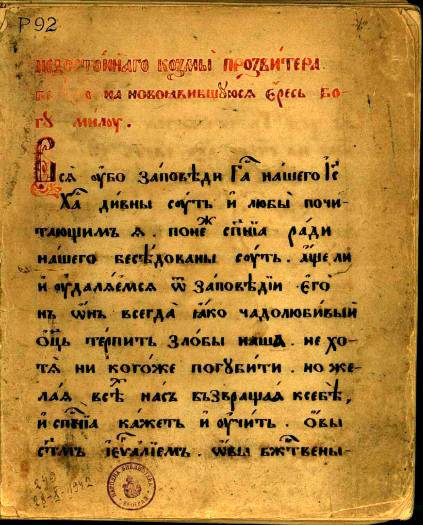

The Bogomils: History, Sources, and Religious Dissent
Bogomilism was a Christian dualist movement attested in the medieval Balkans from the tenth century onwards. Its history is associated above all with Bulgaria, while communities and ideas described by sources as Bogomil later appear in other parts of the Byzantine Empire and south-eastern Europe. Reconstructing this history requires caution: the testimonies are few and, for the earliest period, largely come from authors who sought to refute or suppress what they described.
This essay offers a historical and cultural account, distinguishing what the sources attest from modern interpretations. Freedom of conscience is a question we bring to the past; we do not attribute the modern language of rights to the Bogomils or present their dissent as a modern political programme.

1. A Balkan movement, not a national legend
The best-known account links the beginnings of Bogomil preaching to Bulgaria under Tsar Peter I (927–969). In his Discourse against the Bogomils, the priest Cosmas says that a priest named Bogomil began preaching in the country. The text is conventionally dated to the late tenth century, after Peter’s death. A letter attributed to Patriarch Theophylact and addressed to the ruler is regarded as the earliest surviving reference to the movement; Cosmas provides the first extended account that has come down to us. These dates describe the surviving documentation, not necessarily the precise moment when every form of dualist dissent began.
The movement’s name does not resolve every question. Cosmas connects it to Bogomil, but his explanation also contains polemical wordplay. It is safer to speak of a religious tradition identified as Bogomil by the sources than to imagine a uniform organisation with an identical creed everywhere from the outset. “Bogomil” belongs to a history of relationships and labels: believers, preachers, and communities were described by ecclesiastical authorities, chroniclers, polemicists, and observers in different regions. We do not possess a complete archive written by the Bogomils themselves. This imbalance shapes what we can say about their doctrine, daily life, and social composition.
2. Reading a hostile source
Cosmas is indispensable, but he is not a neutral observer. His work is a refutation: he denounces opponents, urges the clergy to correct their conduct, and defends orthodoxy. It informs us on at least two levels. It preserves accusations and descriptions that help reconstruct beliefs attributed to the Bogomils; it also reveals the concerns of an ecclesiastical author and the reforms he considered necessary. The text should neither be accepted literally nor dismissed as pure invention.
Historians compare Cosmas with other evidence: Theophylact’s letter, condemnations in Tsar Boril’s Synodikon (1211), later Byzantine texts, saints’ lives, and western documents. Every source has a date, audience, genre, and interest. An ecclesiastical condemnation establishes that an authority condemned certain doctrines; by itself, it does not establish how widespread those doctrines were or how each believer understood them.
The scarcity of evidence has practical consequences. Detailed reconstructions of Bogomil social life may go beyond what the documents allow. Jan Wolski’s recent study of claims about the movement’s early social function stresses the need to distinguish evidence in Cosmas’s sermon from historiographical speculation. This is a useful principle for a project that seeks to be accessible without turning hypotheses into certainties.
3. Dualism and the problem of evil
Anti-Bogomil sources associate the movement with a dualist account of the relationship between the good God and the visible world. The starting point is an ancient religious question: how can evil, corruption, and suffering be explained without attributing them to the perfectly good God proclaimed by Christianity? In polemical accounts, the Bogomil answer involves an opposing power, often identified with Satan, said to have a role in creating or governing the material world.
“Dualism” is a broad category. It can mean a sharp opposition between principles, but also a hierarchy in which the evil power remains subordinate to the supreme God. Medieval dualist traditions were not all the same, and formulations could change over time. It is therefore best not to reduce every Bogomil to a rigid formula or automatically equate Bogomilism with ancient Manichaeism, Paulicianism, or western Catharism.
Sources attribute to the Bogomils criticism of aspects of worship and ecclesiastical authority, including the value assigned to church buildings, images, the material cross, sacraments, and clerical hierarchy. Here too, precision matters. An opponent may group different practices under one label; the evidence does not permit a complete Bogomil liturgy or a single model of community for every century.
Dissent was not only an abstract dispute about the origin of matter. It concerned how religious authority was recognised and salvation sought. Yet to claim that the Bogomils developed a modern principle of individual liberty would be anachronistic. We can study their conflict with institutional orthodoxy; freedom of conscience is the philosophical question we bring to that history.
4. Religious dissent and power
In the Middle Ages, the distinction between religious and political order was not the same as in contemporary states. Unity of faith could be treated as a condition of communal cohesion and sovereign legitimacy. In Bulgaria, the council convened by Tsar Boril at Tarnovo in 1211 condemned Bogomilism. The text known as Boril’s Synodikon preserves the anathemas and the memory of this religious policy.
Repression should not be romanticised: people accused of heresy were not necessarily conscious heroes in a struggle for rights, and the sources do not attest a single political movement seeking to overthrow the state. Nor should repression be concealed. The condemnations show that the authorities considered dissent important enough to define, refute, and contain.
This history invites us to distinguish two questions often conflated: a community’s political independence and the religious freedom of the people within it. A power may defend its autonomy from an external authority while imposing uniformity internally. The medieval Balkans do not offer a modern answer, but they show one historical form of the problem.
5. From Bulgaria into the Balkans and Byzantium
Over the centuries, sources refer to Bogomils in different parts of the Balkans and Byzantine Empire. This does not mean that one community moved intact from one territory to another. Ideas travelled, were translated and debated, and authorities could apply the same label to different groups.
There were contacts between some Balkan dualist churches and western communities later called Cathars. Records of preachers’ journeys, relations among bishops, and the circulation of texts make historical comparison possible. They do not prove that all Cathars were Bogomils or that doctrines remained unchanged across regions. Similarities must be established case by case.
Bosnia requires further caution. The claim that the medieval Bosnian Church was simply a Bogomil church has long been debated and has also been used in modern national interpretations. Sources attest contacts and controversies, but the nature of the Bosnian Church and the extent of dualist influence remain disputed. A separate essay addresses this question rather than turning a contested hypothesis into a certain collective identity.
6. Medieval Serbia: geographic proximity, historical difference
Medieval Serbian history is intertwined with that of neighbouring Balkan lands, but the Bogomils should not be presented as a continuous Serbian national tradition. Under Grand Župan Stefan Nemanja in the second half of the twelfth century, Serbian hagiographic sources describe the condemnation of people labelled heretics. Their identification as Bogomils is debated: the text gives few doctrinal details and was written in a context that celebrated the ruler and his defence of orthodoxy.
Geographic proximity and cultural connections make comparison legitimate; they do not prove direct descent between medieval Bogomils and modern Serbia. The firmer historical point is that medieval Serbian authorities helped define the boundaries of orthodoxy and, according to the hagiographic tradition, repressed heresy. See also Medieval Serbia: Nemanja, Orthodoxy, and dissent.
7. A declared contemporary reading
Why return to medieval dissent today? Not to make the Bogomils ideal ancestors of a nation or to prove that a rebellious spirituality survived unchanged across the centuries. Their history offers an occasion to examine the relationship between conscience, belonging, and authority.
In this project, “resistance” has two distinct uses. As a historical term, with due caution, it describes dissent from the dominant religious order. As a contemporary philosophical term, it raises the question of how a person can retain inner responsibility when an authority demands obedience. The second use is our interpretation; it is neither a Bogomil quotation nor proof that they claimed a modern right.
Reflection on Serbia begins with a parallel question, not a genealogy: how can a community preserve memory, language, and dignity without turning identity into a means of exclusion? The answer is not uncritical celebration. A respectful project must be able to recognise a people’s culture and wounds, document conflicts, and leave room for plural voices. The connection is ethical comparison, not historical continuity.
Conscience is not free because it belongs to an ancient tradition or national identity. It is free when people can seek truth, dissent, and recognise the dignity of others without being compelled to obey through fear.
Sources and selected bibliography
- Cosmas the Priest, “The Discourse of the Priest Cosmas against Bogomils (after 972),” trans. Janet and Bernard Hamilton, with Yuri Stoyanov, in Christian Dualist Heresies in the Byzantine World, c. 650–c. 1450: Selected Sources (Manchester University Press, 1998), pp. 114–134. Medieval polemical source.
- Theophylact, Patriarch of Constantinople, letter to Peter I of Bulgaria on the Bogomils, in Hamilton, Hamilton, and Stoyanov, Christian Dualist Heresies, pp. 98–102.
- Andrew P. Roach, “Bogomils,” in The Cambridge Companion to Christian Heresy (Cambridge University Press, 2025), pp. 276–300.
- Jan Wolski, “The Social Importance of the Bogomil Movement in the Light of the Sermon by Cosmas the Priest: Source Facts and Historiographical Speculations, an Attempt at Assessment,” Vox Patrum 97 (2026), 259–284.
- Anna-Maria Totomanova, “The Anti-Bogomil Anathemas in the Synodikon of Tsar Boril and in the Discourse of Kosmas the Presbyter against the Bogomils,” Studia Ceranea 9 (2019), 107–122.
Editorial note: this is an introductory research essay, not a definitive reconstruction. Medieval evidence is presented by distinguishing testimony, historiographical interpretation, and contemporary philosophical reflection.